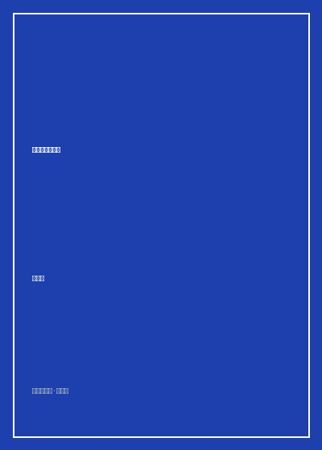

失业这件小事儿

总体观点
《失业这件小事儿》脱胎于阿兰·德波顿对现代资本主义劳动分工的深度田野考察。作者走访了全球航运码头、饼干研发实验室、火箭发射场、会计师事务所与职业咨询中心，以诗意而冷峻的目光审视现代人如何将自身的全部价值、尊严与灵魂押注在一个微小的工位之上。
德波顿敏锐地指出，现代社会的残酷之处在于发明了‘唯才适用’的神话——它让成功者坚信自己的富贵完全源于个人能力，同时也让每一个遭遇解雇、失业或职业挫败的普通人深陷自我怀疑的绝望深渊。全书以哲学家的博学与文学家的慈悲，为疲于奔命的现代职场人提供了一份解绑‘工位束缚’、重拾精神自由的心灵处方。
核心观点
-
1. 过度细分的分工机制对劳动意义的剥离
现代工业与数字流水线将工作拆解为极其微小的碎片，劳动者彻底丧失了对最终成果的掌控感与创造性自豪。
饼干研发工程师耗费整整三年时间只为调配出一款巧克力夹心饼干外皮脆度的添加剂，连他自己都无法向家人解释这项工作的价值。 -
2. 唯才适用神话对失败者的道德霸凌
现代社会声称机会完全均等，导致失业在人们眼中不再是不幸的外部经济危机，而是个人能力与品德低下的耻辱烙印。
被投行裁员的中年主管躲在地下车库不敢回家，即便领取了补偿金依然深陷‘我是无用废柴’的毁灭性自责中无法自拔。 -
3. 职业咨询的荒诞：为无意义寻找合理解释
现代职场催生了庞大的咨询产业，试图用复杂的心理测试和职业规划术语，为资本机器的高速运转涂抹温情粉饰。
职业规划导师用五颜六色的性格雷达图向求职者许诺‘找到灵魂契合的天职’，实则只能将他们批量推荐给初级销售岗位。 -
4. 庞大基础设施背后无名工匠的隐忍诗意
维系现代文明运转的电网、排污与航运工人，在远离聚光灯的角落里默默劳作，呈现出最朴素而动人的工匠尊严。
泰晤士河口的高压输电巡线员每天攀爬百米铁塔检查绝缘子，在狂风中默默维系整座伦敦都市的灯火通明。 -
5. 剥离工位定义后的生命广阔天地
工作不过是赚取生存资料的一项契约，绝不等于个体的生命全部；失业正是打破异化、重新审视自我真实志趣的契机。
被解雇的会计师在漫步荒野与研读古典诗歌中找回了久违的感官敏锐，意识到世俗职位绝不能定义人的崇高心灵。
全书结构
-
第一章 货运码头：现代经济的庞大静脉
德波顿走访泰晤士港集装箱枢纽，展现自动化吊车与货轮的冰冷交接，以及人作为齿轮的微缩境况。
巨大的集装箱起重机精准抓取来自远东的电子元件，操作室里的工人孤单对视屏幕，劳动完全被代码化支配。 -
第二章 饼干研发：无谓琐碎的现代工位
深入食品工业创新实验室，探讨现代职场如何制造出大量看似精密繁复却对人类幸福毫无实质贡献的工作。
市场总监与产品研发员开了一整天的头脑风暴会，只为决定是否将包装盒上的卡通兔子耳朵稍微调大两毫米。 -
第三章 职业规划：寻找天职的现代迷信
剖析当代人对‘工作不仅要养家更要实现自我’的浪漫化幻想，揭露职业顾问体系背后的心理安慰剂本质。
年轻人为了追寻所谓的‘真正热爱’频繁跳槽换行，却在每一个新岗位上重复遭遇官僚内耗与精神枯竭。 -
第四章 输电与会计：无名运转的沉默英雄
转向高压电网与审计行业，向维持现代社会安全运转的无名螺丝钉致敬，探寻平凡工作中的伦理重量。
资深审计师在成百上千页枯燥的报表中甄别假账漏洞，以近乎修道院僧侣般的专注守卫商业契约的底线。 -
第五章 走出工位：面对失业与重塑自我的勇气
直面经济下行期普遍的裁员风暴，倡导解绑职业头衔与自我价值的依赖，学会以更从容宽广的哲学眼光面对人生变故。
在离开办公大楼的那一刻，主人公抬头仰望湛蓝苍穹，第一次在周一上午感受到大自然无私赋予的宁静与自由。